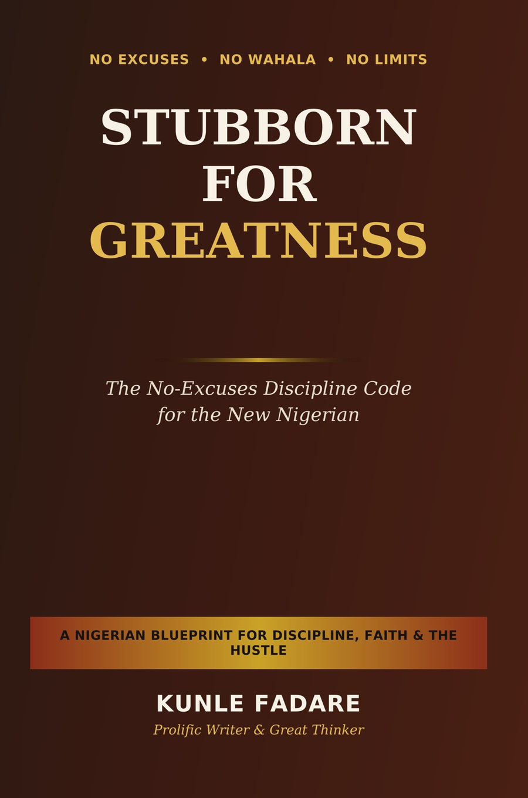

A discipline system for Nigerians who are tired of explaining themselves
Every January, Nigerians declare a new vision. By December, it's buried under the same excuses — no light, no capital, no connections, no luck. Stubborn for Greatness is the discipline system built for Nigerian life, not a translated foreign self-help book.
Pay by bank transfer · Confirmed on WhatsApp · Delivered to your email

Say them out loud. Most people have used at least three of these this year alone.
"The economy is hard."
True — and someone opened a kiosk in this same economy and now runs three branches.
"I don't have capital or connections."
Capital isn't always cash. Sometimes it's a skill you already have and haven't sold yet.
"This is not my time yet."
Waiting on God was never meant to look like doing nothing.
"Person wey suppose help me no gree help me."
The moment you stop waiting for that one person, you get your power back.
"I schooled for this, so I must work in this field."
Your certificate proves you can finish something. It doesn't cage your future.
"It runs in the family."
Patterns that were learned can be unlearned. It might as well start with you.
"The government has failed us."
Often true — and still no reason every personal goal goes unmet.
"I'm too old / too young to start."
Age is a number. Excuse is a decision.
"It's not my portion."
Scripture teaches seedtime and harvest — not permanent lack for some and overflow for others.
It will show you that difficulty and permanent excuse are two different things — and that discipline, not motivation, is what actually separates the people who keep rising from the people who keep starting over.
Why discipline — not motivation — is the real engine behind Nigerian success stories that last.
The nine everyday excuses from this page, dismantled one chapter at a time.
A money-discipline system built for naira reality — not a foreign economy.
Real, sourced stories: Aliko Dangote, Folorunsho Alakija, Innocent Chukwuma, and Paystack's founders — with full citations.
A complete 90-Day No-Excuses Challenge, with trackers and 45 declarations.
20 chapters, reflection questions, and practical drills — not vague inspiration.
Every case study in this book is real and sourced — not manufactured inspiration. Full references in the Notes & Sources appendix.
"Stubborn for greatness does not mean pretending life is easy. It means refusing to let its difficulty become your permanent excuse."
Price returns to ₦6,000 once the 28-day launch window ends.
Use the exact name that will appear on your payment receipt — it's how Kunle matches your payment.
After sending the transfer, tap the button below. It opens WhatsApp with your details pre-filled — attach your payment screenshot there.
If WhatsApp doesn't open, message +234 816 782 2124 directly with your screenshot.
Your copy is sent to your email (or WhatsApp) within a few hours of confirmed payment.
Is this just another generic motivational book?
No. It's built around Nigerian realities — japa, black tax, owanbe pressure, faith, hustle culture — with real sourced case studies and citations, not vague inspiration.
Is it too "churchy" or too secular?
Neither. It blends faith, business discipline, and practical psychology, because that's how most of us actually live.
Will I actually use it, or just read it once?
Every chapter ends with a practical drill and reflection questions, plus a full 90-day tracker built to be used, not admired.
How do I pay, and is it safe?
You pay by direct bank transfer to Kunle's personal Access Bank account — no third party holds your money. You confirm the payment yourself on WhatsApp, so there's a real person on the other end, not a faceless checkout.
How fast will I get my copy?
Within a few hours of your payment being confirmed on WhatsApp, sent straight to your email or WhatsApp.